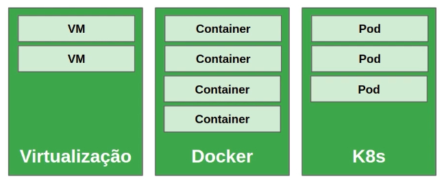
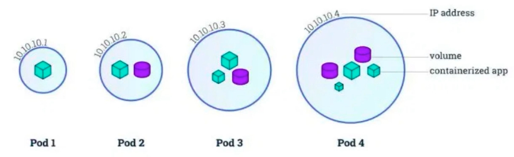
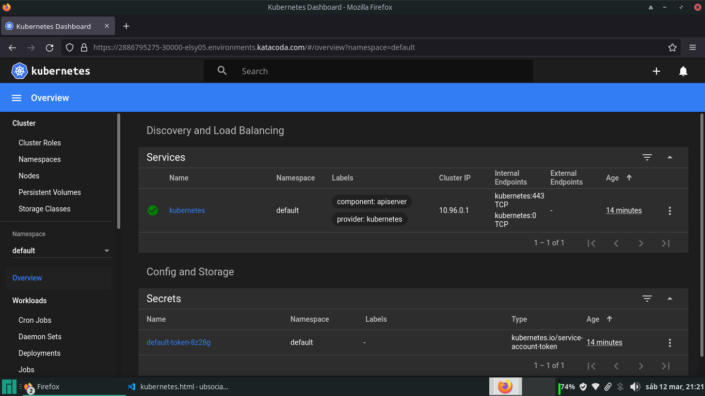
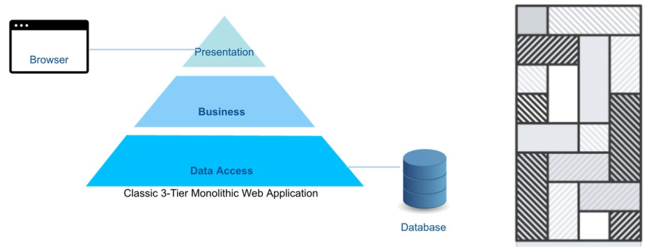
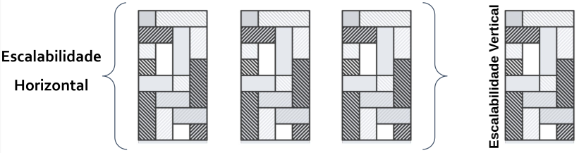
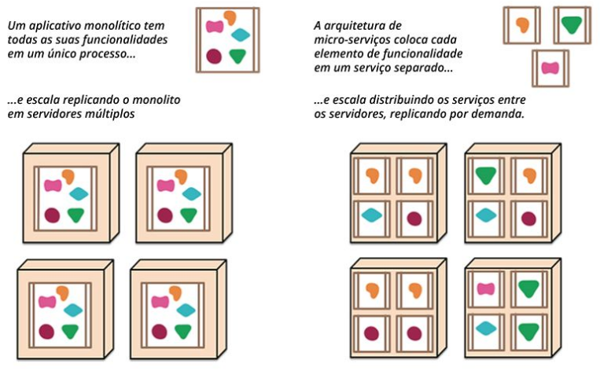
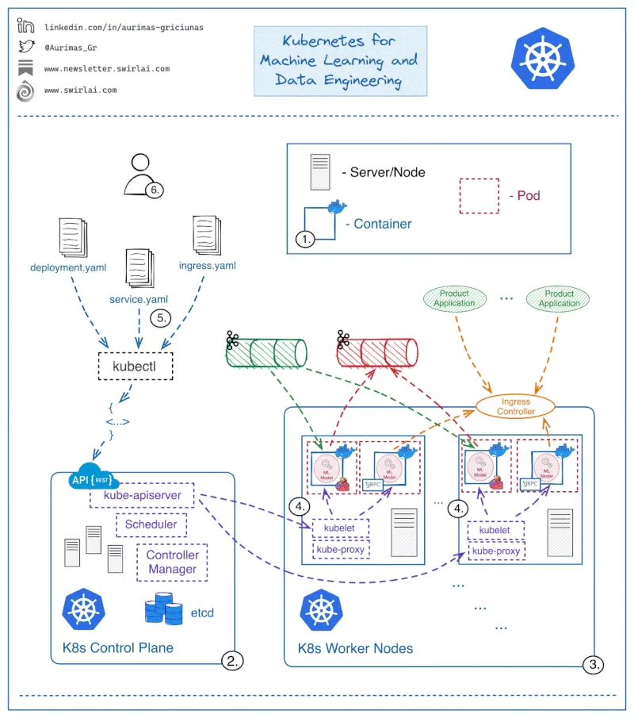

Problemática
Nos primórdios, para cada serviço em uma aplicação (Apache, MySQL, nginx...) era necessária uma máquina física para alocá-lo, resultando-se em vários servidores para rodar um site que necessitasse dessas várias aplicações, promovendo capacidade subutilizada. Com a chegada da Virtualização, tudo fora executado, em VMs, numa máquina física única, porém há muito gasto de hardware na alocação e cotidiano. Dessa forma, havia-se a Consolidação do Servidor, onde que os servidores que não estavam sendo utilizados, em alguns momentos de pouco fluxo, eram desligados. Quando a necessidade de carga era maior, os demais servidores eram religados, alocando novamente as outras VMs que haviam sido movidas para o único servidor no início (Live Migration). Com o surgimento dos Containers, constituiram-se as aplicações isoladas (Microsserviços), descartou-se a necessidade de replicar stacks do SO, como duplicação de libraries, a própria infra do SO e trazendo, com isso, maior desempenho, facilidade de manutenção e leveza.
Conceito
Kubernetes (K8s) é ferramenta de código aberto para automatizar implantação, gerenciamento e escalonamento de aplicações conteinerizadas, automatizando, com isso, toda a infraestrutura de aplicações. A Orquestração gerenciará os containers entre os servidores e os ativará/desativará de acordo com a necessidade de carga no cluster, escalando recursos e corrigindo problemas. O Kubernetes pode ser utilizado em Cluster Single Node (1 só servidor) ou Cluster padrão (1-N Master Node (Máquina Mestre/gerenciadora), 1-N Slaves/Workers Node (Máquina Escrava/gerenciada)).
- Quando um node que aloca recursos tem pane, os containers nele serão perdidos?
- Se há 10 réplicas da aplicação 1.0 no cluster, e insiro uma réplica da 1.1, como as demais serão atualizadas?
- Como escalar o software para lidar com o aumento da demanda?
Arquitetura K8s

Orquestrar tarefas de gerenciamento. Pode ser instalado em modo single ou cluster. O cluster é formado por nós master e worker, onde o master é node de interação com o usuário. Em grandes estruturas, podem haver mais de 1 master, para o caso de falhas e correção de problemas.
- Master: Executa os componentes do plano de controle;
- Worker: Geralmente executa os Containers.
Componentes:
- kubeadm: Automatiza grande parte do processo de criação/instalação do cluster;
- kubelet: Componente essencial do K8s que lida com a execução de Pods. Atua como um agente em cada node, intermediando (interface) as trocas de mensagens entre API server e Docker runtime. Tecnicamente, faz interação com o Docker e kube-apiserver;
- kubectl: CLI de interação com o K8s cluster.
Pod:
 Menor e mais básica estrutura do K8s, criada para abstrair o conceito de Container. Consiste de 1 ou mais Containers, recursos de armazenamento (Volumes) e 1 único ID e IP na rede do cluster K8s. Utiliza-se vários Containers dentro de um Pod, raramente, geralmente em que hajam vários processos, processos em batch (lote) e demais tarefas pesadas (Ex: Um Container Web Service recebe outra Imagem, que deverá ser processada pelo mesmo, ou seja, quando à 'relações' entre Containers em 1 mesmo Pod).
Ciclo de Vida:

- Pending: Pod foi aceito pelo K8s, mas 1 ou mais Containers ainda não foram criados. Isso inclui tempo de escalonamento e tempo de download da Imagem;
- Running: Pod foi alocado em um node e todos os Containers foram criados. Pelo menos 1 Container deve estar em execução, ou no processo de (re)inicialização;
- Succeeded: Containers do Pod terminaram com sucesso;
- Failed: Containers do Pod terminaram, pelo menos 1 deles com falha (status!=zero ou terminado pelo sistema);
- Unknown: Por alguma razão, o estado do Pod não pode ser obtido. Tipicamente por causa de erro de comunicação entre node e Pod.
Control Plane:

Legenda: Minion é worker node
- etcd: Provê sistema distribuído e compartilhado para armazenar o estado do cluster, sendo os dados armazenados em formato chave-valor (Informações como status do node master, status dos workers, status de Pods, etc). O etcd é executado, no K8s, como um Pod do mesmo;
- kube-apiserver: Serve a API do K8s, baseada em REST, requisições via YAML (yml) que serão convertidas em JSON pelo kubectl;
- kube-controller-manager: Pacote com diversos componentes de controle (Executa ações como verificação de funcionamento de Pods e, se houverem erros, criará novos Pods);
- kube-scheduler: Escalona os Pods para serem executados nos nodes (Quando o Pod é criado, será escalonado para o node mais ideal). Pode também ser manipulado via usuário para escalonamento personalizado (Exemplo, escalonar Pods somente para as máquinas com GPU);
- kube-proxy: Trata da comunicação entre nodes, adicionando regras ao firewall (Como em iptables, para abertura e redirecionamento de portas, túneis, etc).
Tem-se também Registry, sendo geralmente em repositório local do Docker e outro remoto, como Docker Hub.
Rede no K8s

O modelo de redes do K8s envolve a criação de redes virtuais (Rede overlay) no cluster. Cada Pod do cluster tem um IP único (Externo ou interno), mesmo aqueles que são executados em outros nodes. Entre os plugins para criação de redes entre nodes, responsáveis por criar túneis seguros de comunicação, tem-se:
- Flannel;
- Weave.
Arquivo de Manifesto/Especificação
Pode ser escritos via YAML ou JSON, como modelo abaixo:
arquivoTeste.yaml:
apiVersion: v1
# Comentário
kind: Pod
metadata:
name: kuard
spec:
containers:
-image: gcr.io/kuar-demo/kuard-amd64:blue
name: kuard
ports:
- containerPort: 8080
name: http
protocol: TCP
Recursos/Objetos no K8s (Kind)
- Pods;
- Nodes;
- Deployment;
- ReplicaSet;
- Service.
kubectl e maneiras de interação
Há 2 maneiras básicas de interagir com K8s:
- Imperativa: Através de diversos parâmetros do kubectl;
- Diz ao K8s o que fazer (Ex: 'Crie 3 Pods com configurações X');
- Ideal para aprendizado, visando experimentos interativos ou debugar serviços em produção.
- Declarativa: Escrevendo manifestos e os usando com o comando kubectl apply.
- Diz ao K8s o que você quer (Ex: 'Quero que seja XYZ', então serão feitas, automaticamente, criações e gestão de Pods e afins para alcançar o objetivo solicitado);
- Melhor para implantar serviços de maneira a facilitar reprodutibilidade;
- Recomendado para gerenciar aplicações K8s em produção.
Comandos de Abordagem Imperativa:
Kubectl get, describe e delete podem ser usados com quaisquer recursos. Além desses, tem-se também create, run, scale, expose, exec, copy e logs.
# Listar
kubectl get pods
kubectl get nodes
kubectl get services
# Ver informações detalhadas
kubectl describe pod <nome do Pod>
kubectl describe service <nome do Service>
# Exclusão
kubectl delete pod <nome do Pod>
kubectl delete deployment <nome do Deployment>
Comandos de Abordagem Declarativa:
Em caso de mudanças no arquivo, apply atualiza os recursos.
kubectl apply -f <arquivo.yaml>
kubectl apply -f <arquivo1.yaml> -f <arquivo2.yaml>
kubectl apply -f <folder>/
Criar Pod
Há diversos maneiras, entre as principais, via comando 'kubectl run nginx --generator=run-pod/v1 --image=nginx', via comando de criação em arquivo manifesto ('kubectl create -f diretorio/nomeManifesto.yaml') ou neste formato, diretamente:
cat << EOF | kubectl create -f -
apiVersion: v1
kind: Pod
metadata:
name: nginx-pod
spec:
containers:
-name: nginx-container
image: nginx
EOF
Exportar manifesto
- Salvar manifesto de um Pod: kubectl get pod my-pod -o yaml > my-pod.yaml
- Salvar manifesto sem informações específicas do cluster: kubectl get pod my-pod -o yaml --export > my-pod.yaml
Namespace
K8s usa namespaces para organizar objetos no cluster através de uma divisão lógica (Como se fosse uma pasta). Por padrão, kubectl interage com o namespace padrão (default). Para usar namespace específico (Diferente do padrão), pode-se usar a flag --namespace=<nome>, ou ainda -n <nome>. Para interagir com todos os namespaces, pode-se usar a flag --all-namespaces ao comando.
Criar namespace:
kubectl create namespace dev
kubectl create namespace prod
Listar namespaces:
kubectl get namespaces
Remover namespace:
kubectl delete namespace dev
Filtrar Pods por namespace:
kubectl get pods --namespace=teste
kubectl get pods -n teste
Listar Pods de todos namespaces:
kubectl get pods --all-namespaces
Label
Par de chave-valor String. Todos os recursos/objetos do K8s podem ser rotulados. Ideal para filtragens/classificações. Existem 2 tipos de labels:
1. Equality-based requirement (Igualdades/Diferenças):
environment = production # environment é igual a production
tier != frontend
2. Set-based requirement (Conjuntos):
environment in (production, qa) # environment está em production ou qa
tier notin (frontend, backend)
COMANDOS:
Mostrar labels dos recursos: kubectl get pods --show-labels
Excluir Pods com label run=myapp:
kubectl delete pods -l environment=production,tier=frontend
kubectl get pods -l 'environment in (production),tier in (frontend)'
Atribuir label: kubectl label deployment nginx-deployment tier=dev
Instalação Singlenode do K8s (Ubuntu)
Pode-se instalar a versão K8s Singlenode, via Microk8s (Para dispositivos embarcados, sendo mais estável) ou Minikube (Para ambientes Singlenode). Tem-se, também, a instalação em cluster (Instruções abaixo), onde precisa-se definir Master(s), Worker Nodes.
1. Instalar Docker em todos Nodes:
sudo apt install curl
curl -fsSL https://download.docker.com/linux/ubuntu/gpg | sudo apt-key add -
sudo add-apt-repository "deb [arch=amd64] https://download.docker.com/linux/ubuntu $(lsb_release -cs) stable"
sudo apt update && sudo sudo apt list docker-ce -a
sudo apt install docker-ce=18.06.1~ce~3-0~ubuntu
sudo apt-mark hold docker-ce
cat > /etc/docker/daemon.json <<EOF
{
"exec-opts": ["native.cgroupdriver=systemd"],
"log-driver": "json-file"
"log-opts": {
"max-size": "100m"
},
"storage-driver": "overlay2"
}
EOF
mkdir -p /etc/systemd/system/docker.service.d
systemctl daemon-reload
systemctl restart docker
sudo docker version
2. Instalar K8s em todos Nodes:
# No final, desabilita-se swap para que o K8s funcione melhor
curl -s https://packages.cloud.google.com/apt/doc/apt-key.gpg | sudo apt-key add -
cat << EOF | sudo tee /etc/apt/sources.list.d/kubernetes.list
deb https://apt.kubernetes.io/ kubernetes-xenial main
EOF
sudo apt update
sudo apt list kubelet -a
sudo apt install kubelet=1.12.7-00 kubeadm=1.12.7-00 kubectl=1.12.7-00
sudo apt-mark hold kubelet kubeadm kubectl
sudo kubeadm version
sudo swapoff -a
sudo sed -i'/ swap / s/^\(.*\)$/#\1/g' /etc/fstab
Minikube em Singlenode
Versão Minikube: minikube version
Iniciar cluster Minikube: minikube start --wait=false #Instala Imagens e Pods necessários
Ver informações do cluster: kubectl cluster-info
Ver nodes do cluster: kubectl get nodes
Ver namespaces do cluster: kubectl get namespaces #Namespace 'kube-system' é onde o K8s está instalado
Ver Pods do cluster: kubectl get pods #Mostrará Pods do Namespace default
Ver Pods por namespace: kubectl get pods -n kube-system #De todos namespaces 'get pods --all-namespaces'. Flag '-w' mostra iterativamente (Ctrl+c para sair). Flag '-o wide' mostra informações extras
Ver informações do Pod: kubectl describe pod etcd-minikube -n kube-system
Criar namespace: kubectl create namespace ubsocial
Criar Pod: kubectl run nginx --generator=run-pod/v1 --image=nginx -n ubsocial #Criará Pod no Namespace ubsocial. Nesse caso, utilizando 'curl ipPodNginx' acessará a página do nginx
Criar Pod via arquivo Manifesto diretamente:
cat << EOF | kubectl create -f -
apiVersion: v1
kind: Pod
metadata:
name: nginx-pod
spec:
containers:
-name: nginx-container
image: nginx
EOF
Criar Pod via arquivo Manifesto específico (arquivoManifesto.yaml): kubectl create -f arquivoManifesto.yaml -n ubsocial
Exportar Manifesto de Pod: kubectl get pod nginx -o yaml -n ubsocial --export > nginx.yaml #Pode-se não redirecionar ao arquivo, também retirar o --export para ver na tela
Ver labels: kubectl get pods --show-labels -n ubsocial
Atribuir label ao Pod: kubectl label pod nginx-pod -n ubsocial run=novoNginx
Excluir Pod: kubectl delete pod nginx -n ubsocial #Excluirá Pod 'nginx' do Namespace 'ubsocial'
Excluir Pods via label: kubectl delete pods -l run=novoNginx --all-namespaces #Flag '-n nomeNamespace' para filtrar por namespace
Ver Services dos Namespaces: kubectl get services --all-namespaces (Em ports, mostrará, portaHost:portaService)
Editar Manifesto de Pod via label: kubectl edit pod nginx -n ubsocial #Teclas 'Esc', após ':wq' para salvar e sair
Dashboard Minikube
Sistema GUI para gerenciamento Kubernetes (Namespaces, Nodes, Volumes, Pods, etc).

Instalação Dashboard via Minikube: minikube addons enable dashboard
Arquivo manifesto para executar o Dashboard: cat /opt/kubernetes-dashboard.yaml (Conteúdo abaixo)
apiVersion: v1
kind: Service
metadata:
labels:
app: kubernetes-dashboard
name: kubernetes-dashboard-katacoda
namespace: kubernetes-dashboard
spec:
ports:
- port: 80
protocol: TCP
targetPort: 9090
nodePort: 30000
selector:
k8s-app: kubernetes-dashboard
type: NodePort
Criar Service Dashboard: kubectl apply -f /opt/kubernetes-dashboard.yaml (apply mesmo que create)
Service acima habilitará a porta 30000, que dará acesso ao Dashboard (Imagem acima)
Acesso via curl: curl localhost:30000 #Mas para acessá-lo, precisa ser via Browser
Configuração multi-node do K8s
Levando em conta que os componentes do K8s Singlenode (kubeadm, kubelet...) já estejam instalados.
-- (Master Node) --
1. Iniciar Master Node (No fim, salvar o comando kubeadm join):
kubeadm init --apiserver-advertise-address $(hostname -i)
#Comando acima gerará token de autenticação para acesso junto com o comando para usar nos workers (kubeadm join ipHost:porta --token numToken --discovery-token-ca-cert-hash sha256:numHash (Exemplo 'ipHost:porta': 172.17.0.8:6443))
#Comando 'kubeadm token list' mostrará os tokens
2. Setar arquivo de configuração para kubectl poder interagir com o cluster:
sudo cp /etc/kubernetes/admin.conf $HOME/
sudo chown $(id -u):$(id -g) $HOME/admin.conf
export KUBECONFIG=$HOME/admin.conf
3. Configurar rede do K8s com Plugin Weave:
kubectl apply -n kube-system -f "https://cloud.weave.works/k8s/net?k8s-version=$(kubectl version | base64 |tr -d '\n')" #Baixará/Executará manifesto e o salvará em '/opt/weave-kube'
4. Testar Node master: kubectl get nodes #Node master possuirá status 'ready'
5. Verificar Plugin Weave: kubectl get pod -n kube-system #Pod weave-net-rdgfx possuirá 2 Pods ready e status 'running' (1 para casos de falha)
-- (Worker Node 1) --
6. Adicionar Worker Nodes ao cluster (Usar comando salvo após configurar Master Node):
kubeadm join ipHost:porta --token numToken --discovery-token-ca-cert-hash sha256:numHash (Exemplo 'ipHost:porta': 172.17.0.8:6443, comando 'kubectl cluster-info' mostra isso)
-- (Master Node) --
7. Verificar se há Worker Node: kubectl get nodes #Mostrará node01 com status 'ready'
8. Mostrar detalhes do Master Node: kubectl describe node nomeMaster (Geralmente 'master')
9. Mostrar detalhes do Worker Node 1: kubectl describe node nomeNode01 (Geralmente 'node01')
10. Listar status dos componentes: kubectl get componentstatuses
11. Listar Pods de todos Namespaces: kubectl get pod --all-namespaces
12. Mostrar informações do cluster: kubectl cluster-info
13. Permitir que Master execute Pods: kubectl taint node nomeMaster node-role.kubernetes.io/master:NoSchedule- #Não é recomendado que Master execute Pods
Outros comandos úteis:
kubectl logs deployment/myapp
kubectl -n kube-system logs -f POD_NAME
kubectl exec POD_NAME -it sh
kubectl cp POD_NAME:<FILE> <LOCAL FILE>
kubectl top pod POD_NAME --containers
kubectl -n my-ns delete pod,svc --all
kubectl edit svc/docker-registry
ReplicaSet
ReplicaSet é o controller que mantém estável um conjunto de Pods em execução, garantindo disponibilidade de um número específico de Pods idênticos. ReplicaSet é raramente utilizado diretamente, pois existe um conceito de mais alto nível: Deployment, que gerencia ReplicaSets e provê uma maneira de atualizar os Pods, além de outras features.
Manifesto exemplo:
apiVersion: extensions/v1beta1
kind: ReplicaSet
metadata:
name: kuard
spec:
replicas: 1
template:
metadata:
labels:
app: kuard
version: "2"
spec:
containers:
- name: kuard
image: "gcr.io/kuar-demo/kuard-amd64:green"
Manifesto modelo para ReplicaSet:
De acordo com o manifesto abaixo, todos os Pods com tier 'busybox' serão replicados, conforme quantidade informada. No próprio manifesto de criação dos Pods, pode ser informado o ReplicaSet, conforme abaixo. ReplicaSet é controller Equality-based, então, no selector, o tier informado pode ser diferente, conforme necessidade, podendo informar múltiplos tiers no selector.
busybox-rs.yaml:
apiVersion: apps/v1
kind: ReplicaSet #Tipo ReplicaSet
metadata:
name: busybox #Nome da ReplicaSet
labels:
app: busybox
spec:
replicas: 2 #Quantidade de réplicas
selector: #Pods que serão replicados pelo K8s
matchLabels:
tier: busybox #Nome de acordo com label do Pod à replicar
template:
metadata:
labels:
tier: busybox
spec:
containers:
- name: busybox
image: radial/busyboxplus:curl
Comandos ReplicaSet:
-- (Master Node) --
1. Criar ReplicaSet: kubectl create -f busybox-rs.yaml
2. Listar ReplicaSets: kubectl get rs
3. Listar Pods relacionados: kubectl get pods -o wide
4. Mostrar detalhes do ReplicaSet: kubectl describe rs/busybox
5. Escalar um ReplicaSet: kubectl scale --replicas 3 rs busybox #Alterna para 3 réplicas ao busybox
6. Deletar um ReplicaSet: kubectl delete rs busybox
7. Deletar todos Pods e ReplicaSets: kubectl delete pod,rs --all
Deployment
É uma maneira de automatizar o gerenciamento de Pods. Permite especificar um estado desejado para um conjunto de Pods e o cluster vai constantemente trabalhar para manter o estado desejado, dessa forma o Pod permanece 'vivo' e com status congelado em seu ciclo de vida. Todo Deployment cria um ReplicaSet. Com o Deployment em funcionamento, descarta-se necessidade de lembrar nomes e ip's de Pods. Entre as vantagens, tem-se:
- Escalabilidade: Com um Deployment, pode-se especificar o número de réplicas desejado e o Deployment vai criar ou remover Pods até alcançar tal número;
- Atualizações: É possível alterar a Imagem de um Container para uma nova versão (Rollout) e o Deployment vai gradualmente substituir os Containers para a versão nova (Evitando downtime);
- Self-healing: Se um dos Pods for acidentalmente destruído, o Deployment vai imediatamente iniciar um novo Pod para substituí-lo.
O Deployment é criado através de Manifesto, conforme exemplo-modelo abaixo (O modelo abaixo executará automaticamente, devido à 1ª linha de execução):
cat <<EOF | kubectl create -f -
apiVersion: apps/v1
kind: Deployment
metadata:
name: nginx-deployment
labels:
apps: nginx
spec:
replicas: 2
selector:
matchLabels:
app: nginx #Nome de acordo com label do Pod à replicar
template:
metadata:
labels:
app: nginx
spec:
containers:
- name: nginx
image: nginx:1.15.4
ports:
- containerPort: 80
EOF
Comandos Deployment:
Ao atualizar/modificar aplicação envolvida em Deployment, a modificação será gradativa, ou seja, atualizará 1 Pod e, após esse funcionando, atualizará outro e assim sucessivamente.
-- (Master Node) --
1. Criar Deployment (Sem Manifesto):
kubectl create deployment nomeDeployment --image=nginx #Nome do Deployment à preferência do usuário
2. Ver informações relacionadas:
kubectl get pods -o wide #Criou Pod relacionado. Mesmo se o usuário removê-lo, o Deployment criará outro para satisfazer a regra no Manifesto de sua origem
kubectl get deployments #Criou deployment conforme solicitado
kubectl describe deployment nomeDeployment #Mostrar detalhes do deployment
curl ipPodCriado #Acessará página nginx do Pod criado, então está funcionando corretamente
3. Alterar quantidade de réplicas: kubectl scale --replicas 3 deployment nomeDeployment
kubectl delete pods -l nomeLabelPodsReplicados
kubectl get pods -o wide -w #Deployment refará os Pods de acordo com a quantidade de réplicas solicitadas no Manifesto de sua origem
4. Atualizar Deployment com nova versão da aplicação: kubectl set image deployment/nomeDeployment nginx=nginx:1.91 --record #Ficará com status Scaled up
5. Ver status da atualização: kubectl rollout status deployment.v1.apps/nomeDeployment
kubectl describe deployment nomeDeployment #De acordo com as atualizações será a versão do Deployment. Caso a versão da Imagem não exista (Como a do nginx acima), mostrará status erro ImagePullBackOff
6. Desfazer atualização do Deployment: kubectl rollout undo deployment.v1.apps/nomeDeployment #Ficará com status Scaled down
Service

Pods podem ser criados e destruídos constantemente por um Deployment. Uma vez que cada Pod recebe um IP diferente, os Pods em execução em um dado momento podem ser diferentes dos Pods em um momento posterior. Como manter o acesso aos serviços providos pelos Pods? Exemplo: Como 'frontend' Pods mantém a informação sobre 'backend' Pods se os IPs dos mesmos mudam repentinamente?
O Service cria uma camada de abstração acima do conjunto de Pods réplicas, permitindo acesso dinâmico a um grupo de Pods (Balanceador de Carga). Então, esse Balanceador de Carga vai, dinamicamente, acessar as listas de Pods do Deployment, permitindo acesso aos Pods (Se um Pod cair, ele selecionará outro ao balanceamento, para acesso. Tanto faz o Pod, o Service K8s escolherá e gerenciará isso de forma automática, sem que o usuário precise se preocupar). Assim, pode-se prover acesso ininterrupto e dinâmico a qualquer réplica, além de balanceamento de carga.

É através das labels referenciadas no selector do arquivo Manifesto. O arquivo de Manifesto de Service é do tipo Equality-based, ou seja, não possui 'matchLabels' em sua composição. Abaixo, segue modelo exemplo de Manifesto com Service:
O ideal no K8s é criar Deployment para criar e gerenciar quantidade de Pods e, após isso, criar Service para acesso.
apiVersion: v1
kind: Service
metadata:
name: meuService
spec:
selector:
app: meuApp
ports:
- protocol: TCP
port: 80
targetPort: 9376
Tipos de Services:
- ClusterIP: Expõe o Service apenas para a rede interna do cluster, fornecendo IP estático para acesso aos Pods. Esse é o ServiceType padrão (K8s cria um assim para o kube-apiserver, pode-se conferir com 'kubectl get services -n kube-system'). Recomendado para somente acessos internos do cluster;
- NodePort: Expõe o Service em cada Node com uma porta estática (NodePort), permitindo acesso externo através do endereço 'ipNode:NodePort' (Mapeará uma porta à uma porta de todos Containers, para todos os Nodes incluindo o Master). Recomendado para acessos com dispositivos externos, como acesso externo no cluster para BD, serviços web, etc;
- ExternalName: Mapeia o Service para um nome/endereço (e.g.foo.bar.example.com). Recomendado para ambientes de produção, com serviços de DNS, onde descartará IPs e labels, para dar vez a nomes como endereços web;
- LoadBalancer: Expõe o Service externamente através de um balanceador de carga de um provedor de nuvem. Internamente, cria NodePort, pra onde o balanceador de carga externo roteia. Recomendado em situações onde descartará o LoadBalancer do K8s local, trocando-o por outro em cloud, como em Web Services.
Exemplo prático (Service ClusterIP):
-- (Master Node) --
1. Criar Deployment (kubectl create -f nomeArquivo.yaml)
apiVersion: apps/v1
kind: Deployment
metadata:
name: my-deployment
spec:
selector:
matchLabels:
app: metrics
department: sales
replicas: 3
template:
metadata:
labels:
app: metrics
department: sales
spec:
containers:
- name: hello
image: "us-docker.pkg.dev/google-samples/containers/gke/hello-app:2.0"
2. Ver Pods criados: kubectl get pods
3. Criar Service tipo ClusterIP (kubectl create -f nomeArquivo.yaml)
apiVersion: v1
kind: Service
metadata:
name: my-cip-service
spec:
type: ClusterIP
# Uncomment the below line to create a Headless Service
# clusterIP: None
selector:
app: metrics
department: sales
ports:
- protocol: TCP
port: 80
targetPort: 8080
4. Listar services em execução: kubectl get svc
5. Mostrar detalhes do Service: kubectl describe svc nomeService
6. Acessar Service: kubectl exec -ti nomePod (my-deployment)
7. No container, solicitar requisição ao Service (Via curl):
apk add --no-cache curl
curl ipCluster:80
8. Deletar Service: kubectl delete svc nomeService
Estrutura do describe service:
Name: nginx-service
Namespace: default
Labels: <none>
Annotations: <none>
Selector: app=nginx
Type: NodePort
IP: ipService
Port: <unset> 80/TCP
TargetPort: 80/TCP
NodePort: <unset> 30080/TCP
Endpoints: ipPod1:80,ipPod2:80
Session Affi.: None
Ext. Traffic P.: Cluster
Events: <none>
Microservices
Aplicações monolíticas consistem em única aplicação de software em camadas no qual frontend e backend estão juntos em único programa e plataforma. Porém, dificuldades em escalabilidade e arquitetura difícil de manter e evoluir são desafios que limitam essa abordagem.
 Arquitetura de Microsserviços:
Abordagem que desenvolve única aplicação como uma suíte de pequenos serviços, cada uma executando seu próprio processo e comunicando-se via mecanismos leves. Os serviços funcionam via mecanismos de deploy independentes totalmente automatizados. Há o mínimo possível de gerenciamento centralizado dos serviços, que podem ser escritos em diferentes linguagens e usar diferentes tecnologias para armazenamento de dados. Decompõe a aplicação por funções básicas, onde cada função é denominada um serviço e pode ser criada e implantada de maneira independente. Cada serviço individual pode funcionar e falhar sem comprometer os demais. O uso de microsserviços é uma das melhores maneiras de demonstrar o quão valioso é gerenciar Containers via K8s.
Cada um desses microsserviços pode ser escalonado diferente e independentemente. Assim, se necessário, é possível alocar mais recursos para um determinado microsserviço. Entre as vantagens da utilização de Microservices, tem-se escalabilidade, facilidade na atualização de partes da aplicação, confiabilidade e disponibilidade (Uma parte pode parar, mas as outras continuam de pé), usar tecnologias diversificadas ideais para cada situação específica. Abaixo, exemplo prático de aplicação baseada em Microservices:

Deploy de aplicação na prática:
Aplicação, em Microservices, de carrinho de compras, composta por várias tecnologias. Abaixo, comandos para construção de toda a aplicação. Com poucos comandos, toda a aplicação já estará no ar rapidamente.
-- (Master Node) --
1. Clonar o repositório do Git: git clone https://github.com/linuxacademy/robot-shop.git #Aplicação de carrinho de compras
2. Listar arquivos de descrições dentro do projeto: ls robot-shop/K8s/descriptors/ #Lista de vários Manifestos, entre eles Deployment, que garantirá a execução e gestão dos demais, e Service para acessá-los externamente
2. Criar Namespace e fazer deploy da aplicação:
kubectl create namespace robot-shop
kubectl -n robot-shop create -f ~/robot-shop/K8s/descriptors/
3. Acompanhar status dos Pods: kubectl get pods -n robot-shop -w
4. Acessar frontend da aplicação: http://ipMasterNode:30080
StatefulSet
Pods, nativamente, são stateless (sem estado, não armazenam dados). No Deployment, ao reiniciar o Pod, os dados armazenados não estão garantidos e os ip's são modificados. Com StatefulSet, o Pod possuirá mesmo ip de rede, host e estado (armazenamento de dados assegurado), mesmo após cair e reiniciar. Diferente do Deployment, no StatefulSet cada volume é dedicado e não compartilhado.
apiVersion: v1
kind: Service
metadata:
name: nginx
labels:
app: nginx
spec:
ports:
- port: 80
name: web
clusterIP: None
selector:
app: nginx
---
apiVersion: apps/v1
kind: StatefulSet
metadata:
name: web
spec:
selector:
matchLabels:
app: nginx
serviceName: "nginx"
replicas: 3
minReadySeconds: 10
template:
metadata:
labels:
app: nginx
spec:
terminationGracePeriodSeconds: 10
containers:
- name: nginx
image: registry.k8s.io/nginx-slim:0.8
ports:
- containerPort: 80
name: web
volumeMounts:
- name: www
mountPath: /usr/share/nginx/html
volumeClaimTemplates:
- metadata:
name: www
spec:
accessModes: [ "ReadWriteOnce" ]
storageClassName: "my-storage-class"
resources:
requests:
storage: 1Gi
Job
Carga de trabalho para determinada tarefa, onde os containers em execução saiam com êxito após conclusão. Jobs são ideiais para processamento único ou em lote, ao invés de serviço contínuo. cron jobs, construídos sob jobs, atuam com componente de agendamento (cron) para execução, a fim de agendar trabalhos futuros ou regulares/recorrentes.
apiVersion: v1
kind: Job
metadata:
name: pi
spec:
template:
spec:
containers:
- name: pi
image: perl:5.34.0
command: ["perl", "-Mbignum=bpi", "-wle", "print bpi(2000)"]
restartPolicy: Never
backoffLimit: 4
K8s em sistemas ML
- Interior K8s;
- K8s control plane;
- Interior de cada worker node;
- Escalabilidade (vários worker nodes);
- Implantação da aplicação no K8s, via YAML;
- Usuários com autonomia na arquitetura de suas aplicações, nos limites estabelecidos pelo administrador do cluster.
Elaborado por Mateus Schwede
ubsocial.github.io